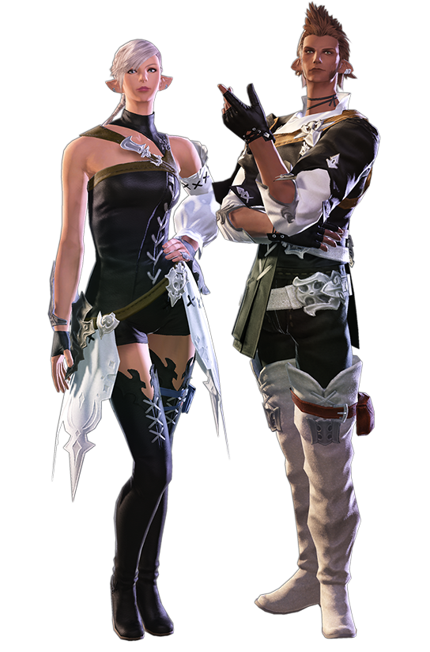
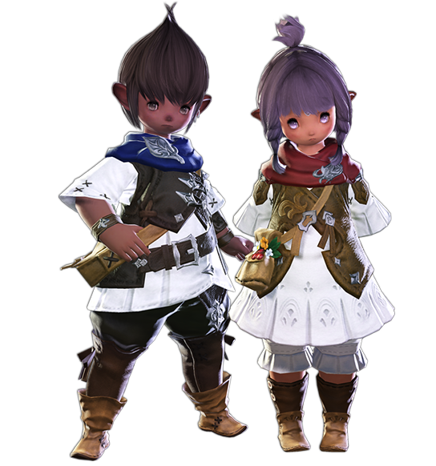

Final Fantasy XIV propose huit races jouables. Parmi elles, cinq sont très semblables aux races de Final Fantasy XI, une provient de Final Fantasy X et une de Final Fantasy XII. Chacune des races est divisée en deux ethnies. Toutes les races possèdent une version homme et femme, hormis les Hrothgars exclusivement hommes. Dans l'extension Shadowbringers, le joueur est amené à voyager dans un autre monde appelé « premier reflet » : dans ce monde, ces races sont également présentes mais avec un nom différent.
LES HYURS
De stature moyenne, les Hyurs sont la race emblématique d'Éorzéa.
Jadis minoritaires, après trois grandes vagues migratoires, ils constituent aujourd'hui le groupe ethnique le plus important du territoire. Cependant, une grande diversité de cultures et d'origines caractérise les Hyurs, si bien qu'ils n'ont guère de sentiment d'appartenance à un même groupe.
LES HYUROIS
Á la différence de leurs frères hélions, les Éloignés ont été privés de" l'étreinte chaleureuse de leur reine. C'est ce qui leur a valu leur nom, décrivant bien leur style de vie nomade et leur affranchissement de tout monarque. Ils sont connus pour exercer tous types de métiers, de marchand à mercenaire en passant par divers travaux saisonniers, à condition que cela n'entrave pas leur tendance à voyager.
LES HYURGOTHS
Á la différence de leurs frères hélions, les Éloignés ont été privés de" l'étreinte chaleureuse de leur reine. C'est ce qui leur a valu leur nom, décrivant bien leur style de vie nomade et leur affranchissement de tout monarque. Ils sont connus pour exercer tous types de métiers, de marchand à mercenaire en passant par divers travaux saisonniers, à condition que cela n'entrave pas leur tendance à voyager.
LES MIQO'TES
Cette race d'allure féline est caractérisée par ses grandes oreilles pointues et sa queue touffue. Ce peuple de chasseurs a migré vers Éorzéa en quête de gibier, traversant les océans gelés durant
« la grande glaciation » qui accompagna la cinquième ère ombrale. Minoritaires en Éorzéa et désireux d'avoir leur propre territoire, les Miqo'tes vivent souvent seuls et à l'écart, même dans les villes. Cette tendance est particulièrement manifeste chez les hommes.
LA TRIBU DU SOLEIL
Les individus de cette tribu se surnomment les « messagers du soleil », et nombre d’entre eux vénèrent la déesse Azeyma. Leur population en Éorzéa est réduite et se concentre essentiellement dans la Cité de Limsa Lominsa. Certains racontent qu'il existerait un clan près du désert de Sagolii...
LA TRIBU DE LA LUNE
Les individus de cette tribu se surnomment les « protecteurs de la lune », et beaucoup d'entre eux vouent un culte à la déesse Menphina. Durant de longues années, ils se sont confrontés aux Gridaniens qui considéraient leurs activités de chasse dans la forêt de Sombrelinceul comme du braconnage. Depuis, leurs rapports se sont améliorés et il n'est pas rare d'apercevoir ces Miqo'tes à l'intérieur de la Cité.
LES ÉLÉZENS
Cette race, caractérisée par sa silhouette élancée et son espérance de vie légèrement supérieure à la moyenne, est le peuple originaire d'Éorzéa. L'attitude altière des Élézens témoigne d'une noblesse d'un autre temps, où ils occupaient encore la position dominante. Jadis engagés dans une lutte sans merci face à l'envahisseur hyur, ils mènent aujourd'hui une coexistence prospère avec eux.

LES SYLVESTRES
Les futaies de la forêt de Sombrelinceul ont été le refuge de ces Élézens durant des centaines d'années. Bien qu'ils aient conservé le nom de « Sylvestres », nombre d'entre eux se sont adaptés à la vie citadine et peuplent aujourd'hui les cités-États d'Ishgard et de Gridania, qu'ils ont aidé à construire. Très attachés à l'ordre et à la discipline, ces nomades sont bien souvent considérés comme prétentieux et orgueilleux par les autres races.
LES CRÉPUSCULAIRES
Ces « Élézens de l'ombre » ont vécu plusieurs centaines d'années dans de sombres grottes calcaires. Ils sont les descendants de la branche qui s'est séparée du clan principal des Sylvestres, lors de la fondation de Gridania. Amoureux de la liberté, nombre d'entre eux vivent reclus loin du tumulte des Cités.
LES ROEGADYNS
Cette race se caractérise par sa forte carrure et son tempérament chaleureux. Les Roegadyns sont les descendants d'un peuple de marins qui semait la terreur sur les mers septentrionales. Leurs ancêtres ont débarqué en Éorzéa à bord d'immenses vaisseaux avant de se séparer en deux clans. Souvent considérés comme des sauvages en raison de leur rudesse, les Roegadyns sont cependant aussi connus pour leur compassion et leur fidélité incontestable. Nombre de grands guerriers de l'Histoire sont issus de cette tribu.
LE CLAN DE LA MER
Ces terribles « loups de mer » venus des eaux septentrionales ont longtemps terrorisé les marins et les habitants des côtes éorzéennes. De nos jours, ils constituent la plus grande population de la cité-État de Limsa Lominsa où nombre d'entre eux travaillent comme matelot ou soldat de marine. Fiers de leurs racines, les Roegadyns du Clan de La Mer portent tous des noms empruntés à la langue de leurs ancêtres.
LE CLAN DU FEU
Cette tribu minoritaire vit depuis des générations dans les régions volcaniques de la chaîne d'Abalathia. Affichant une prédilection pour le mercenariat, ces Roegadyns utilisent des noms d'usage créés à partir de mots simples dans la langue commune. De nos jours, on les aperçoit essentiellement du côté de la cité-État d'Ul'dah où ils travaillent comme gladiateurs ou gardes du corps.
LES LALAFELLS
Caractérisé par une silhouette trapue, ce petit peuple d'anciens agriculteurs est originaire des îles méridionales. À mesure que les liens commerciaux avec Éorzéa se sont renforcés, nombre de Lalafells s'y sont installés. Bien que leur allure enfantine rende difficile l'estimation de leur âge, leur bagout et leur bonne humeur communicative font qu'ils entretiennent des liens amicaux avec toutes les autres races.
LE PEUPLE DES PLAINES
Les Lalafells de ce clan se sont majoritairement établis à la Noscea et dans les régions au relief plat où le sol est fertile. Si nombre d'entre eux travaillent la terre, il n'est pas rare d'en apercevoir à Limsa Lominsa où ils vivent du commerce maritime et de la pêche. Ces Lalafells sont réputés pour leur attitude nonchalante et leur relative désinvolture.

LE PEUPLE DES DUNES
Les Lalafells de ce clan se sont majoritairement établis à la Noscea et dans les régions au relief plat où le sol est fertile. Si nombre d'entre eux travaillent la terre, il n'est pas rare d'en apercevoir à Limsa Lominsa où ils vivent du commerce maritime et de la pêche. Ces Lalafells sont réputés pour leur attitude nonchalante et leur relative désinvolture.
LES AO RA
Les cornes arrondies et les écailles aux motifs délicats qui caractérisent les Ao Ra conduisent souvent les gens à croire que ce peuple originaire du continent oriental d'Othard descendrait des dragons. Ce sujet a longtemps été débattu, et des érudits ont mis en avant certaines différences flagrantes pour etayer l'abscence de connexion entre ces deux races, la plus convaincante étant le fait ques les excroissances crâniennes des Ao Ra leur fournissent une ouïe et une reconnaissancespatiale développées. La différence de gabarit entre les hommes et les femmes est un autre fait de cette espèce que l'on ne retrouve pas chez les dragons.
LES RAEN
Cette ethnie aoranne se distingue par ses écailles blanches aux reflets clairs. Ayant hérité des caractéristiques d'un ancêtre légendaire commun appelé le "Père de l'Aube", les Raen préfèrent vivre dans le calme et se montrent très patients. Bien que leurs terres se situent originellement dans les profondes vallées de lointaines contrées orientales, nombreux sont ceux qui ont récemment choisi de traverser les mers en quête d'aventure en Éorzéa.
LES XAELA
Ces Ao Ra ont la particularité d'avoir des écailles noires aux reflets sombres. Ayant hérité du caractère de l'ancêtre légendaire de leur espèce qu'est la "Mère du crépuscule", les Xaela montrent un grand intérêt pour les faits d'armes et sont de nature belliqueuse. Nomades, ils se déplacent en petits groupes, généralement centrés sur les leins familiaux. Ce mode de vie a conduit certains d'entre eux en Éorzéa.
LES VIERAS
Avec leur grande taille et leur silhouette affinée, les Viéras ressembleraient presque aux Hyurs et aux Élézens s'ils n'étaient pas dotés de longues oreilles saillantes. Comme le veut le "Vert Mot", le strict code régissant leur communauté, il est interdit aux Viéras d'entrer en contact avec le monde extérieur sous peine d'être exilés. Leur société est matriarcale et les individus mâles ne sont que rarement aperçus dans l'enceinte des villages. Tapis dans l'ombre, ils protègent la forêt et empêchent les intrus de pénétrer sur les terres sacrées de leur peuple.
LES RAVA
Les Viéras du clan Rava vivent principalement dans la jungle de Golmore, leur peau cuivrée leur permettant de se fondre facilement dans leur environnement.
Les hommes sont les gardiens de la forêt, les femmes sont des chasseuses habiles, qui gardent férocement leur maison et leurs petits.
Les Rava ont toujours su conserver leur souveraineté, y compris sous la domination du royaume de Dalmasca. Même si la plupart des membres du clan vouent leur existence à leur forêt sacrée, quelques individus choisissent parfois de partir à la découverte du monde extérieur.
LES VEENA
Avec une peau aussi claire que les sommets enneigés dominant la région, le clan Veena a élu domicile dans la forêt qui borde les contreforts sud-ouest de la chaîne de Skatay. Comme leurs homologues du clan Rava, les Veena vivent comme des chasseurs et des cueilleurs, travaillant non seulement pour protéger les bois, mais aussi pour les nourrir. Alors que les vents de la guerre balayaient un certain nombre de ceux qui avaient quitté leurs montagnes natales, beaucoup de ces chasseurs endurcis ont choisi de partir pour les rives lointaines d'Éorzéa.
LES HROTHGARS
Originaires du continent d'Ilsabard, les Hrothgars ont une carrure robuste et ressemblent à des lions, du moins les hommes; les femmes sont si peu nombreuses qu'elles ne sont que rarement aperçues par les étrangers. L'apparence intimidante des Hrothgars, non atténuée par leurs griffes tranchantes et leurs crocs acérés, a provoqué la panique lors de leur arrivée en Éorzéa. En raison de leur incapacité à communiquer, leurs premiers échanges avec les locaux ont souvent été conflictuels, mais leur apprentissage de la langue commune a progressivement permis de dissiper les mésententes. Les relations désormais apaisées, les Hrothgars sont aujourd'hui les bienvenus aux quatre coins du continent.
LES HÉLIONS
Les Hélions ont traditionnellement habité les régions méridionales d'Ilsabard, divisés en petites tribus chacune dévouée à une reine, mais leur présence a recemment commencé à se faire sentir à travers les trois continents. Comme ces Hrothgars n'avaient pas eux-même de nom pour se décrire, les érudit les ont appelés "Hélions" après avoir observé que leur existance dépendait entièrement des besoins de leurs souveraines, de la même façon que les planètes gravitent autour du soleil.
LES ÉLOIGNÉS
Á la différence de leurs frères hélions, les Éloignés ont été privés de" l'étreinte chaleureuse de leur reine. C'est ce qui leur a valu leur nom, décrivant bien leur style de vie nomade et leur affranchissement de tout monarque. Ils sont connus pour exercer tous types de métiers, de marchand à mercenaire en passant par divers travaux saisonniers, à condition que cela n'entrave pas leur tendance à voyager.